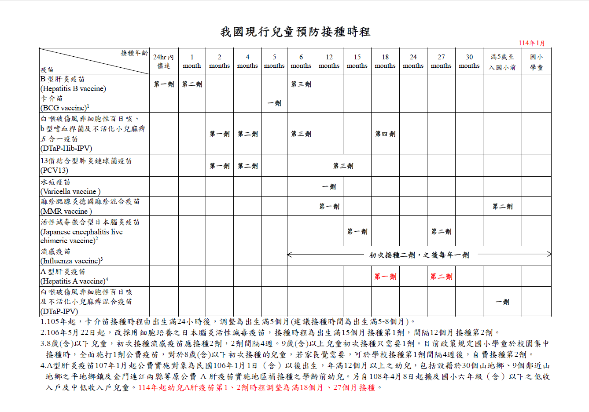
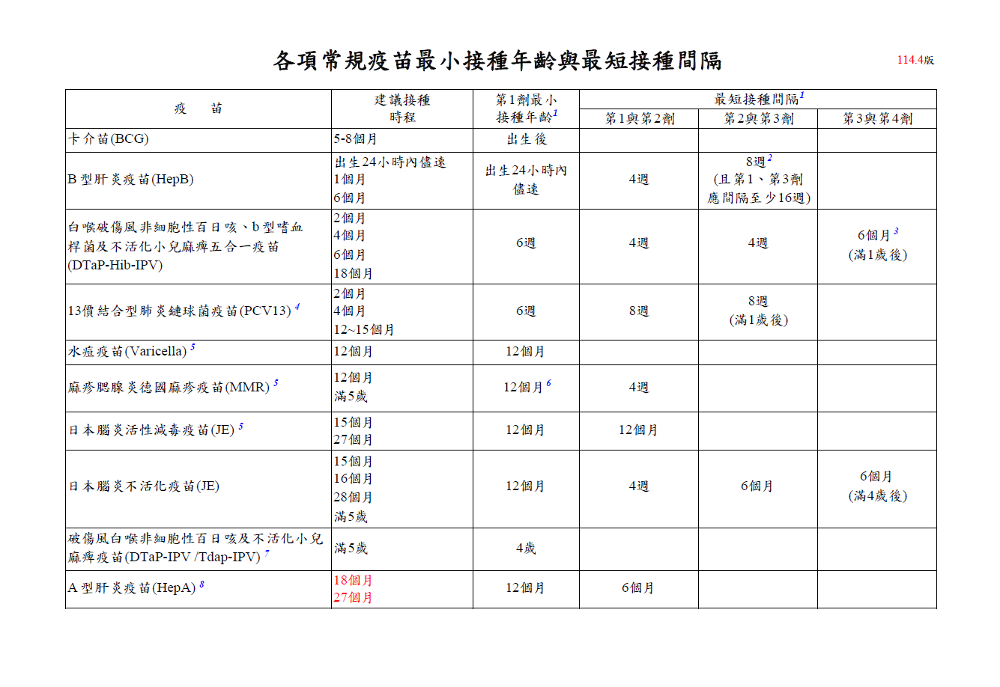
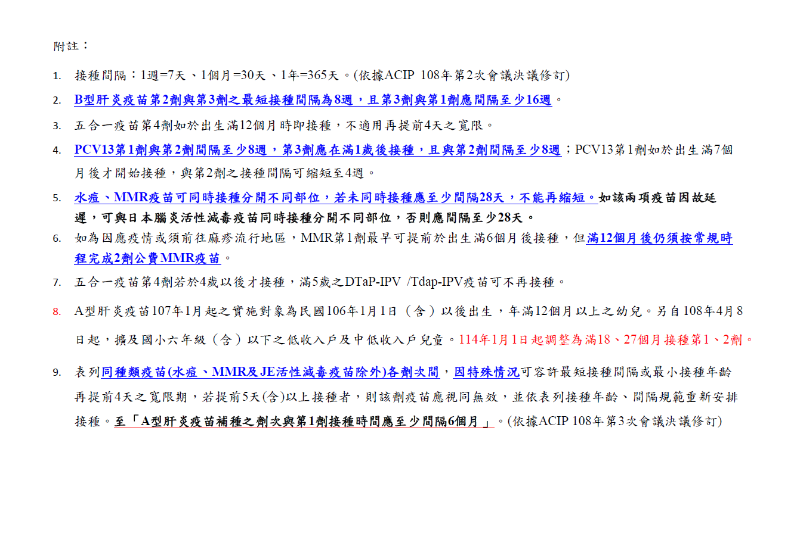

臺中市太平區衛生所全方位業務 AI 導航員
臺中市太平區衛生所
全方位業務 AI 導航員
輸入業務名稱、里名或承辦人，立即查詢
查詢
地段查詢
AI 智慧問答
常見業務快速查詢
幼兒專責醫師
幼兒預防注射
腸病毒疫苗補助
疫苗接種
兒童發展篩檢
唐氏症篩檢
婚後孕前健檢
新住民孕婦補助
特殊群體生育補助
銀髮假牙補助
戒菸門診
成人健檢
癌症篩檢
心理諮商
長照服務
弱勢就醫補助
汽機車駕照體檢
高齡駕駛換照
食品業者登錄
行政相驗
美沙冬營養費
器捐 / 安寧
結核病防治
返回
返回首頁
查詢
所有里別一覽
返回首頁
AI 問答助理
請直接打字輸入您的問題，我會用最簡單的方式回答您。
您好！我是太平衛生所業務問答小幫手，請打字輸入您的問題，我會盡快回答您。
送出
🔒
所內人員專區
請輸入密碼以繼續
取消
進入
返回
🔒 所內人員專區
兒童預防接種參考資料
📅 現行兒童預防接種時程表（114年1月版）

點圖可放大檢視
⏱ 各疫苗最短接種間隔（114.4版）


點圖可放大檢視
所內最新訊息公告
大家都可以在這裡張貼訊息，設定到期日之後會自動消失
到期日
張貼訊息
載入中…